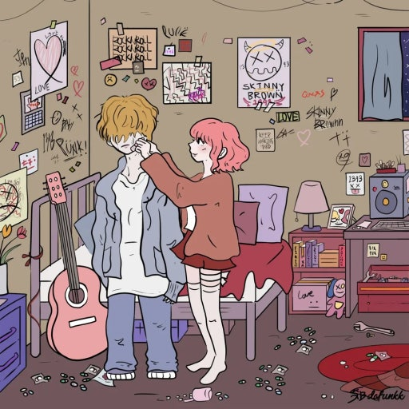
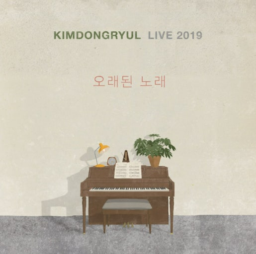

Fix You
by skinny brown
이 노래의 너무 무겁지 않은 밝은 느낌이 마음에 들었다. 가사도 내가 너를 돕고 너도 나를 도와준다는 내용을 담고 있다. 음악에 담긴 내용이 힘들때도 내 곁에 누군가가 있다는 생각에 다시금 일어날 기운을 받는 곡이다.
YouTube에서 듣기힘든 시간에 나를 버티게 해준 노래들

by skinny brown
이 노래의 너무 무겁지 않은 밝은 느낌이 마음에 들었다. 가사도 내가 너를 돕고 너도 나를 도와준다는 내용을 담고 있다. 음악에 담긴 내용이 힘들때도 내 곁에 누군가가 있다는 생각에 다시금 일어날 기운을 받는 곡이다.
YouTube에서 듣기
by Alexander Jean
The song "Companion" conveys the heart of a person who broke up a long time ago. It is a song that expresses passionate love that the two use together.
YouTube에서 듣기by LUCY
이거 지우고 설명 작성
YouTube에서 듣기